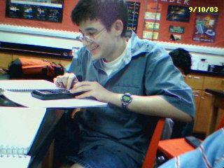
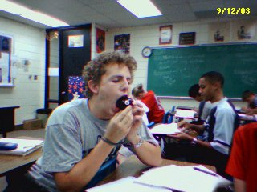
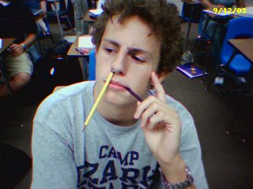
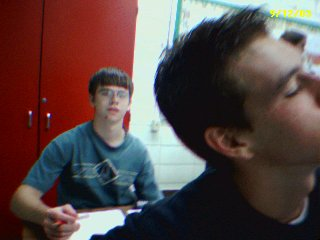
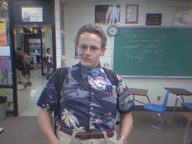

Chris's Page |
| H o m e A r t w o r k M i s c L i n k s A b o u t |
|
Welcome! Here you will find the silly, funny, and incoherent writings of Chris Ponder and his friends, Nathan Jones and Patrick Wicker.
There are also a couple of photos that were taken with Chris's Palm Pilot. Enjoy!
E-mail:
slaughter946@yahoo.com or AIM:
Slaughter946
P h o t o s
These photos were taken with Chris's Palm Zire PDA, which has a built-in camera. It is awesome.
 Big Eddie enjoying himself. Ben Jackson, eating an eightball. Ben Jackson, having a hard time in math. Brian Plisco in the back. Kevin Castellanos in the front. Nerd day dress up. Ben Jackson. Bwuahaha. S t o r i e s By: Chris Ponder, Nathan Jones, and Patrick Wicker Ode to PantalonesPantsthey can be blue they can be green they are the coolest things I have ever seen Pants they can be mechanical they can have pockets they can have magical powers and rip of little girls lockets Pants I love them I love them lots They are they most original idea since metal cooking pots Pants Also called Pantalones Some can be wacky Did you know they come in at least ten shades of khaki? Pants... The End - Nathan JonesNinjasLaughingly, Peter picked up the disk. It was plainly marked Top Secret in red ink across the center. As he was dusting it off, five super-awesome ninjas dropped in from the ceiling! Pete noticed them out of the corner of his eye, and dove through the glass window next to him, and shot 2 of them in the face with the gun he pulled out of his pants. The ninjas got tremendously pissed off because one of them was their friend, so they dashed after him. Pete was running from his life, but it was obvious that he had no chance against the ninjas, for they were far superior in every way imaginable. Suddenly, a hole formed below Pete's foot, and he fell into a black void with a chair and some old Chinese guy. The old Chinese guy said that Pete should not run from what he feared, for then he would only be losing the chance to greet fate with power. This confused Pete, so he killed the old guy, and was transported back to the office with ninjas and all. Thinking about the Chinese guy, and how much he likes fried rice, he realized that he should not have killed him. Understanding the philosophical crap, Pete grabbed a handful of letter openers and dove at the ninjas screaming. Too bad they had katanas and chopped him up into pieces. Poor Pete.- Chris PonderFlopFlopI like cheese its all around my knees Flop It makes me slip And it tastes like mozzarella Flop It has risen to my chest I'm bogged down by my dress Flop And now I see The end is coming for me Flop So much cheese I can hardly breathe Flop The room smells oh so good Not like I thought my death would Flop I thought it wasn't possible I didn't believe Flop And here I am drowning In a giant vat of cheese DEATH - Nathan JonesThe Second BobOne day when Bob was prancing around a prairie field, he died. Then another Bob came and he died too, but no one knew about him. Another Bob came, who is actually the third bob. Everyone calls him George. George was a nice guy and loved sitting down. In fact, he sat down so much that his behind was numb 24/7. Then on Saturday while he was having a cup of tea outside a Starbucks, his back-end fell off and he could not move anymore. This was bad because Saturday is the day where a swarm of giant bulls come to run him over. George could see the bulls running around the street corner about 10 blocks from where he was. He tried to get up but had no success. He tried once more and to his surprise, he was able to get onto the table at which he was sitting at having his spot of tea. He grabbed hold of the side of the Starbucks and started managing his way to the top of the building only using his arms. By the time the bulls were 5 blocks away, George had made it to the top of the building. He could hear the bulls coming closer and closer, but he did not worry anymore because he was safe. The bulls reached the star bucks and stopped. This was very odd to George so he peeked over the edge to see what was happening. As soon as he looked over the edge, he was engulfed in a giant tongue.- Patrick WickerElephantsSuddenly, a band of flying elephants swooped in from above, attacking the innocent bystander. He ran as fast as he could, but the elephants were speeding through the air, ever closer to the ground much faster than he could ever run. The man dove quickly to his left, and rolled down a hill, hoping to confuse the elephants. Unfortunately for him, the elephants had already planned for this to happen, and he fell right into their trap. A rather large elephant had been hovering 200 feet above the exact spot where he now lay and it began to drop. The man realized this, only milliseconds before it was too late, and he rolled to his right before bouncing back to his feet. He sprinted down the hill, and dive-rolled into the forest. Looking back, he realized the elephants were still coming, only faster! Running with all his might, he dashed by trees, and through bushes. Glancing over his shoulder, he saw that the elephants were blasting through the trees as if they were toothpicks! The trees were snapping under the might of their awesome power, as they barreled through the forest. One gained speed, and caught up to the man smacking him hard into a tree with its trunk. He was stunned and bleeding from the amazing force of the blow, but he was motivated to return to his feet and keep going. He soon came to a river, but just as he was jumping in the hippo ate him.- Chris PonderFlipFlipFlop Flip A man sits on his ship Flip Flop Flip Onto the deck jumps a fish Flip Flop Flip The man hits it with a stick Flip Flop Flip The fish continues to flip Flip Flop Flip The man gets scared and jumps off the ship Flip Flop Flip A fish sits on the ship - Nathan JonesLa Cucaracha"But why can’t I go to the moon?" screamed Billy in revolt."Because," explained his mother, "first of all, you are a cockroach, and second of all, you don’t even have the cognitive capacity to even perceive the awesome power of a shuttle liftoff! It would destroy you!" "Oh..." Billy pouted. Billy had been wanting to go to the moon ever since he was a few minutes old, because he hatched at night. He thought the moon was a giant party, because he’s stupid. All of the other cockroaches, of course, believed him, with the exception of his mother, who wasn’t quite as stupid and felt that the moon was cheese.... Sweet delicious cheese.... Due to his overwhelming desire to go to the moon, he fought the pain and went out into the daylight. In his adventures he found what he believed was a rocket ship! Unfortunately for him, it was actually as shoe. He crawled inside, and prepared for liftoff. Nothing happened. Upon his return, he was most depressed, because his dreams had not come true that day. Other cockroaches, in their naivety believed that he had in fact found a rocket ship. The next day, they followed Billy out into the sunlight, and forced themselves toward the ship. Just as they were about to board it, though, an earth shattering screech came from above! A large peachy being was moving franticly, and attacking Billy’s friends! One by one, they fell victim to his rocket ship. He was terrified, but ran, due to his instincts. Billy did not know what to do, because the rocket ship betrayed him. He sat long, and thought hard. He was too depressed to talk to anyone, so he checked into the local Cockroach Motel. Nobody knows exactly what happened to Billy after that, because he never came home from that Motel. - Chris PonderMitch the SquirrelSpeaking of one handed heroes have I ever told u the story of Mitch the squirrel and how he defeated the army of evil chipmunks? It all started, as do most good stories, at the beginning. It all started in the year 2051 BC in the 300th year of the mighty Squirrel Empire. Into a poor peasant family a small squirrel was born, his name was Mitch. He grew to almost a foot long during his teenage years, a height of gigantic proportions for squirrels. When he grew older he joined the legion of squirrels there he remained a private until the GREAT WAR OF THE CHIPMUNK. The war began and the chipmunks drove the squirrels back to their capitol, Sqierus. However the Squirrel legion was utterly destroyed before the gates of the city except for Mitch. The Chipmunks attacked and Mitch stood alone on the bridge before the city. One million chipmunks to one squirrel, but that one squirrel had a trick up its sleeve. (Squirrels really didn't wear shirts so I guess it was his hypothetical sleeve.) So any way, wave upon wave of chipmunks came at him and the he whipped out two Tommy guns (Maybe not very historically accurate but still very cool). Their flaming barrels sowed death across the field of chipmunks. Carnage, blood, guts, intestines, dead rodents laying every where. And among it all at the gates of the city stood the one remaining animal on the field, Mitch Champion of the squirrels. He stood, coated in blood, patches of fur missing on a pile of spent bullets and bodies of chipmunks. All he was heard to say after the battle was "Reloading is for Amateurs!" However after the battle he mysteriously disappeared and was proclaimed dead 5 years later when his body was discovered in the belly of a great white shark that was killed in a large puddle after a particularly severe rain storm.- Nathan JonesBovine BrouhahaThe Bovine Brouhaha:Cows in the pasture Coming Home Cows in the Barn Given milk for the kiddies at home Cows in the slaughter house Being cut Just to give us some meat and stuff The king of the cows was a bison A passionate bull named Bill He ruled from the center of his kingdom Atop a high Texas hill Then all of the sudden Bill gained a flash of insight As he stood atop his hill during one clear night. Cows lived in a state of slavery No civil liberties for them They were butchered by farmers Then fed to their daughters Now is that any way to live? Now the cows cry "REVOMOOTION" As they stream from their stalls The cows, they attack us in masses In a great bovine brouhaha - Nathan JonesDimensionsAs Sam was putting on his glasses, he noticed that they were slightly larger than he had remembered them. They used to fit his head quite snugly, but now they flopped around, barely staying on his face. Bewildered, he looked around the room. To his astonishment, though, nothing was as it should have been, and he realized that he was in another dimension! He dashed out of his apartment, down the stairs, and onto the street. Sam looked around, and he was amazed by what he saw. Dogs were meowing, and cats were exploding left and right! Mass chaos was erupting in the streets, but at the same time, all was calm for in this dimension such activity was normal. Sam was never a popular guy back in his own dimension, so he decided that he would give this parallel world a try. It seemed that the people were rolling down the streets instead of walking, so Sam followed suit, and rolled to the nearest sewage treatment plant to buy groceries. When Sam arrived, he was already concerned that he was in fact the superior person in this world, but he would keep that to himself until he felt the time was right to take his stance and lead. As he was walking in, an atrocious stench overtook him, and he nearly fell on his back. The woman standing at the door slapped him, and screamed "Klobgrof!" while the checker stuffed a live chicken down Sam’s pants. Sam thanked both of them, before removing the chicken, and setting it on the ground. Sam walked down the aisles and soon realized, that these people didn’t even eat food, for the boxes were labeled "Tar" and "Sawdust" and "Waste." Frightened, Sam ran out of the sewage treatment plant, and everyone was staring at him because he wasn’t rolling. He ran all the way up the street, and up his stairs to his apartment where it all started. Diving onto his bed, he was transported back to his own dimension. Relieved, Sam sat up and greeted his pet flying squid Willie who was just as happy to see Sam home as Sam was to be home.- Chris PonderThe Next TimeI came to a placeSomeone shot me in the face Why oh why Went right through my eye And as I sit here and die I would start to cry Except I’m missing my eyes But before I'm gone I gotta say The punk that did this is gonna pay He just capped me in the head I'm as good as dead All I knew about him was that his name was Fred But the Next Time I'll be prepared I'll meet him with a ninja posse And go kung fu on his buttocks I'll build a nuke And erase him from the face of the planet I'll make him scream "Uncle" And wish he had never been born I'll cut off his head And bake it into some bread I'll rip out his heart And eat it too Oh man I hate that guy I can't wait until its his turn to die I'll get some squirrels And they will eat his children I'll made him read horrible books, Like the Oddessy and Great Expectations But Wait... I'm Dead - Nathan JonesIf There Was An Ice Cream Truck in My HeadIf There Was An Ice Cream Truck in My Head,It would probably hurt pretty dang bad, I mean a Ice Cream Truck is like sixty billion times the size of my head, What would happen if the ice Cream Truck decided to leave, Would it just bust a giant whole in the side of my head? or would it come out through my ear? Would it hurt? Would I Die? Could I still make Apple Pies? But what if that Ice Cream Truck served frozen delights, To the Kiddies that populate my brain? would the kids be sad if it busted loose? Would the world in my brain be destroyed if my Ice Cream Truck left? Would the streets of the city be devoid of noise, As the good little boys and girls waited straining their ears, Listening for the tell tale noise of bells and whistles? Or would the world go on much the same, on the passing of the Ice Cream Truck from my brain? - Nathan JonesAirplaneAs Chang sat on the airplane, watching Biodome with Pauly Shore which is a rather bad movie, two men in red stood up, and walked to the front of the plane. The men both took off their shirts in a rather menacing manner revealing that they were indeed pirates, and had cruel intentions. Chang was a wise old man, and had a long moustache drooping wisely to the bottom of his wise chin. He was in is late sixties, and having experienced much hardship in his life, was prepared to face the pirates, with a vengeance. When Chang was only ten, a gang of pirates had killed his parents, and now was his time to repay the pirates for the murder they committed. As the pirates were shouting things such as "Arrgh, and Booty" Chang slowly removed his robe, and rose to his feet. The pirates were startled, for they had never been confronted on an airplane by a Chinese man in his late sixties before. Chang was prepared for this day, no matter what situation he was in. Unfortunately, due to new airline regulations, he had to check his katana and shurikens at the gate. Before the pirates could say "Aye, Matey" Chang grabbed a tray table from the back of a nearby seat, and crafted it into a sword, and had slain them both in the blink of an eye. Everyone on the plane cheered, even the pilot. The plane then began to spiral downward to its demise though, because the pilot left the controls to cheer for Chang.- Chris PonderFranceAs Mark regained consciousness, he realized that eating breakfast while showering was not a good idea. He then stepped out of the shower and put on some pants. Little did he know that he had just put on some magical pants. The pants teleported him to France. A French man immediately ran up to him and set Mark’s magical pants on fire with a lighter. He remembered what his mommy told him when he was a little boy. "Whatever you do, do not take off magical flaming pants in France." He had to do something. The fire was eating his pants. Luckily for Mark, there was a near by big bucket of water parade going on. He quickly rushed toward the huge bucket that was riding on a small parade float. He jumped with enormous skill and speed into the bucket expecting to feel the cool relief of water. Unfortunately, Mark did not know that water is French for gasoline. Those crazy French people.- Patrick Wicker |